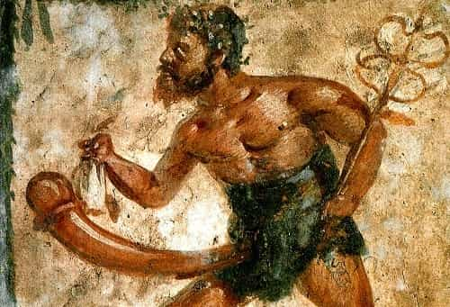

Ovid wrote the first PUA literature, around 3AD. (It was 1970 before the next book appeared, Eric Weber’s How To Pick Up Girls!) About two years later, Ovid wrote Love’s Remedy, about NEXTing the Roman way. This should work for exes, those soon to be, and all those ONEitis cases that frequently motivate guys to start learning game.
Distilled from flowery Latin verse full of mythological allusions (and my personal commentary added), here are the bare essentials of washing that broad right outta your hair.
Prevention

Think with the right head.
If you know it’s going to end badly, it’s best to put an end to it in the beginning. Love’s Remedy emphasized not letting the little head do the thinking. It’s a lot harder to break things off if your doomed crush takes root and turns into full-blown heartbreak.
I’ll add that when it’s uncertain if someone will take you seriously, know when to cut your losses. If you’re too optimistic (a frequent hazard for guys), you’ll waste your time and get hurt feelings. Giving up too easily is also bad; defeatist mentality is another Inner Game problem. Let good judgment be your guide in this balance. Further, if chasing someone gets you nowhere, quit chasing her. You might get better results, and if not, at least you’ve cut your losses.
Let things cool down
Get away from it all and catch some other sights.
If you’re already besotted, you might have to wait for a while and distract yourself. Until you’re ready to take off the rose-colored glasses, preoccupy yourself with work or some other constructive pursuit. Staying busy will keep you from grinding your mental gears.
Some of the examples Ovid throws out there include running for office, taking part in warlike exercises (martial arts or working out should do), or fighting the Parthians. (The Middle East is still a mess, two millennia later. A tour of duty in the sandbox—unless you’re opposed—certainly takes your mind off of anyone who won’t have the common courtesy to mail you a Dear John letter.) Ovid also recommends taking up farming; gardening should work if you can’t afford 40 acres and a tractor. He wrote longingly of the rustic lifestyle, much like Seneca, and also recommends hunting and fishing as other distracting pursuits. A long vacation does wonders.
All that’s difficult if you’re suffering heartbreak. Consider it like taking a bitter pill. Ovid recommends not bothering with magic spells; so no New Age stuff there. Just butch up.
She’s not perfect
Now remind yourself of her flaws:
Say to yourself, “She has filched from me this thing and that and, not content with larceny, her extravagance has compelled me to sell my patrimony. What vows she made, and how often has she broken them! How often has she left me lying before her door! To others she gives her love, to me only her disdain. A common broker enjoys with her the nights of love which she refuses me.” Let all these grievances embitter your feelings towards her. Recall them incessantly to your mind, and let them sow the seeds of hatred in it. And when you reproach her, may you wax eloquent; but if only you grieve enough, eloquent you will be without an effort.
Epic! I’ll also add that a slut is someone who sleeps with anyone, while a bitch is someone who sleeps with anyone except you. So if you’re a man of accomplishment, and someone who won’t consider you gives it up for losers with room temperature IQs, she’s a bitch with fleas.
Ovid recounts a personal anecdote, where he thought over how much he didn’t like the appearance of a “certain wench,” even though he had to use his imagination as he didn’t find anything objectively ugly about her. And then:
“What a lot of money she wants.” And that was, indeed, the main count in the indictment.
Ooh burn! He recommends exaggerating any traits of hers which really are bad. If she lacks sparkle in certain areas, have her demonstrate her lack of talent. If possible, have a good look at her some time without fancy clothes and makeup, or with a mudpack on her face. (If not possible, you can always imagine it.)
Find someone else
After unloading some ammo at his critics (we understand), Ovid recommends (in a roundabout way) getting some outside action before your hot date with Miss Wrong. Further, if she has a strange-looking cookie or “fish taco syndrome”, see above about “she’s not perfect”.
In any event, Ovid wasn’t a big believer in monogamy:
I would counsel you also to have two mistresses at a time. If you could have more, it would be still better.
That one’s going to be controversial. Still, on the plus side, that’s quite a way to achieve abundance mentality.
Keep it cool

Another good one:
…[W]hen your despairing heart is consumed with a passion fiercer than the fires of Aetna, act in such a manner that your mistress may deem you colder than ice. Pretend that you are cured, and if your heart still bleeds, never let her suspect it. Let laughter be upon your lips, though tears be in your heart.
We agree. One of the first game mistakes that recovering AFCs must unlearn is supplication. In this instance, holding frame keeps things graceful if you have to break up. I’ll add that it’s extremely helpful if you’re NEXTing someone who’s merely been toying with your affections.
Further, if someone stands you up for a planned hot date, act like it doesn’t bother you, so it doesn’t “push her pride to the point of disdain“. (Yes, flaking is as old as the Roman Empire!) If she wants you back after that, forget it; bang someone else next time.
Calling it quits
In any case, you’d better be firm, or you’re sunk. If you haven’t had enough yet, hang out with her until you’re sick of her. A modern proverb goes that for every “perfect 10“, there’s a guy who’s tired of dealing with her crap.
Also, don’t be alone when you’re despairing; hang out with your friends instead. Until the crisis has passed, avoid the love-stricken like yourself, as well as happy couples. Keep away from the chick you’re trying to get over, her family, and her friends. Don’t ask about her. (These days, this means no lurking on social media.) Don’t even talk about how you’re over her; a gradual NEXTing is better.
When you’re ready, cultivate indifference rather than resentment; she’s now merely an acquaintance. No angry confrontations either. Still, it’s still okay to remind yourself what a flake she is. Ovid recommends getting rid of your love letters. (This advice is obsolete today. Saving those emails and text messages could save your ass.) Also, avoid places that will remind you of her.
Final notes
The following are somewhat modified from the original, though in the same spirit.
Don’t flaunt your wealth; instead, let her think you’re broke. Don’t get aggro with her past or present boyfriends; they know what a pain in the ass she is now anyway. Eat a moderate diet. You’re allowed to get shit-faced drunk. (I recommend only once—okay, fine, one week.) I’ll further add, go find ten other women.
Read More: Why “Nexting” Unsuitable Women Is Good For Your Sex Life